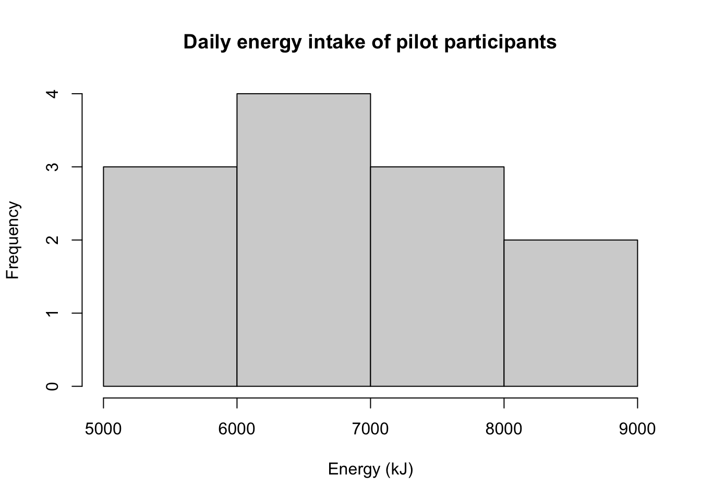

Module 4: Solutions to Learning Activities
Activity 4.1
In each of the following situations, what decision should be made about the null hypothesis if the researcher indicates that:
- P < 0.01
There is strong evidence against the null hypothesis.
- P > 0.05
There is weak or little evidence against the null hypothesis - but the researchers should be advised to provide the actual P-value, not just P > 0.05.
- ‘ns’ indicating not significant
Traditionally, ‘ns’ stands for not significant (for the set level of significance mentioned in the study, usually 0.05). You might still come across this term in some journal articles but this is not best practice for most journals these days. Researchers should always state the P-value (not just whether or not it was significant).
- significant differences exist
This would imply that the P-value is less than the set level of significance mentioned in the study (usually, 0.05). As such, we would conclude that there was evidence against the null hypothesis. However, the researchers should be advised to always state the P-value (not just whether or not it was significant).
Activity 4.2
For the following hypothetical situations, formulate the null hypothesis and alternative hypothesis and write a conclusion about the study results:
- A study was conducted to investigate whether the mean systolic blood pressure of males aged 40 to 60 years was different to the mean systolic blood pressure of females aged 40 to 60 years. The result of the study was that the mean systolic blood pressure was higher in males by 5.1 mmHg (95% CI 2.4 to 7.6; P = 0.008).
H0: There is no difference in the mean systolic blood pressure between males aged 40-60 years and females aged 40-60 years.
HA: There is a difference in the mean systolic blood pressure between males aged 40-60 years and females aged 40 to 60 years.
Conclusion: The mean SBP was 5.1 mmHg (95% CI: 2.4 to 7.6 mmHg) higher in males aged 40-60 years compared to females aged 40-60 years. The P value is 0.008 which provides strong evidence against the null hypothesis. Therefore, we can conclude that there is a difference in the mean SBP of males and females aged 40-60 years.
- A case-control study was conducted to investigate the association between obesity and breast cancer. The researchers found an OR of 3.21 (95% CI 1.15 to 8.47; P = 0.03).
H0: There is no association between obesity and breast cancer. [A more formal way of saying this is that there is no difference in the odds of exposure to obesity among cases of breast cancer and controls i.e. OR = 1].
HA: There is an association between obesity and breast cancer. [A more formal way of saying this is that there is a difference in the odds of exposure to obesity among cases and controls i.e. OR ≠ 1].
Conclusion: The odds ratio is estimated as 3.21, indicating a positive association between the study factor of obesity and the outcome of breast cancer. The 95% CI is 1.15 to 8.47 and excludes the null value of no association (i.e. OR = 1). The P value is 0.03 which provides evidence against the null hypothesis. Therefore, we can conclude that there is a positive association between obesity and breast cancer.
- A cohort study investigated the relationship between eating a healthy diet and the incidence of influenza infection among adults aged 20 to 60 years. The results were RR = 0.88 (95% CI 0.65 to 1.50; P = 0.2).
H0: There is no association between influenza infection and a healthy diet among adults aged 20-60 years. [A more formal way of saying this is that there is no difference in the risk of influenza infection among adults aged 20-60 years who have a healthy diet compared to those who do not have a healthy diet. i.e. RR = 1].
HA: There is an association between influenza infection and a healthy diet among adults aged 20-60 years. [A more formal way of saying this is that there is a difference in the risk of influenza infection among adults aged 20-60 years who have a healthy diet compared to those who do not have a healthy diet. i.e. RR ≠ 1].
Conclusion: The relative risk is estimated as 0.88, indicating a protective association between the study factor of healthy diet and the outcome factor of influenza infection among adults aged 20 to 60 years. However, the 95% confidence interval includes the null value of 1.0 (no association). The P value is 0.2, which means there is no evidence against the null hypothesis. Thus, we can conclude that there is no evidence of an association between a healthy diet and influenza infection among adults aged 20 to 60 years.
Activity 4.3
A pilot study was conducted to compare the mean daily energy intake of women aged 25 to 30 years with the recommended intake of 7750 kJ/day. In this study, the average daily energy intake over 10 days was recorded for 12 healthy women of that age group. The data are in the Excel file Activity_4.3.xls. Import the file into R for this activity.
- State the research question
Is the mean daily energy intake of women aged 25-30 years different to the recommended daily intake of 7750 kJ/day?
- Formulate the null hypothesis
H0: the mean daily energy intake of women aged 25-30 years is the same as the recommended daily intake of 7750 kJ/day.
- Formulate the alternative hypothesis
HA: the mean daily energy intake of women aged 25-30 years is not same as the recommended daily intake of 7750 kJ/day.
- Analyse the data and report your conclusions
library(readxl)
library(jmv)
pilot <- read_excel("data/activities/Activity_S4.3.xls")
summary(pilot)## Energy
## Min. :5260
## 1st Qu.:6045
## Median :6674
## Mean :6856
## 3rd Qu.:7642
## Max. :8770As we are comparing a continuous distribution to a hypothesised mean, we will use a one-sample t-test to conduct this analysis. As the one-sample t-test assumes our data follow a Normal distribution, we should assess this using a histogram.
hist(pilot$Energy, main="Daily energy intake of pilot participants", xlab="Energy (kJ)")
It is very difficult to assess the shape of a distribution with only 12 observations, but here we can see that the distribution looks roughly symmetric. In this case, we will assume Normality.
The one-sample t-test is conducted as below, to compare the variable Energy to the hypothesised mean of 7750 kJ/day:
t.test(pilot$Energy, mu=7750)##
## One Sample t-test
##
## data: pilot$Energy
## t = -2.7141, df = 11, p-value = 0.02014
## alternative hypothesis: true mean is not equal to 7750
## 95 percent confidence interval:
## 6131.023 7580.977
## sample estimates:
## mean of x
## 6856The one-sample t-test output shows that the mean daily energy intake of the 12 women is 6856 kJ (95% CI: 6131 to 7581 kJ). There is evidence (t = −2.71 with 11 DF, P = 0.02) that the mean daily energy intake of women aged 25-30 years is lower than the recommended daily intake of 7750 kJ/day.
Activity 4.4
Which procedure gives the researcher the better chance of rejecting a null hypothesis?
- comparing the data-based p-value with the level of significance at 5%
- comparing the 95% CI with a nominated value
- neither procedure
Both ‘a’ and ‘b’ would give the same chance to reject the null hypothesis. This is because both ‘a’ and ‘b’ are giving you the same information in a different way. In ‘a’ you will get the probability of observing the difference you see in your data by chance and if it is <0.05 you will reject the null hypothesis at the 5% level. Whereas in ‘b’ you will see whether the null value (value of no difference) lies within the range which you are 95% confident contains the true value. If the null value falls outside the 95% CI, you would have less than 5% (100-95 = 5%) probability seeing the observed difference in your data if there were no difference.
Activity 4.5
Setting the significance level at P < 0.10 instead of the more usual P < 0.05 increases the likelihood of:
- a Type I error
- a Type II error
- rejecting the null hypothesis
- Not rejecting the null hypothesis
Setting the significance level cut-off at 0.10 instead of the more usual 0.05 increases the likelihood of a. a Type I error and c. rejecting the null hypothesis.
The cut-off of 0.10 increases the chance of a type I error from 5% to 10% (the chance of making a Type I error is the same as the significance level). If the significance level is higher, then there higher probability of rejecting the null hypothesis if there no effect in reality.
Activity 4.6
For a fixed sample size setting the significance level at a very extreme cut-off such as P < 0.001 increases the chances of:
- obtaining a significant result
- rejecting the null hypothesis
- a Type I error
- a Type II error
Setting the significance level at a very extreme cut-off (such as 0.001) increases the chances of: d. a Type II error.
For a given sample, if the significance level is set very small it will make it harder to find evidence against the null hypothesis. In other words, it will be difficult to detect an effect if an effect exists in reality. In other words, the probability of type II error will increase: you will not be able to reject the null hypothesis when a real difference exists.